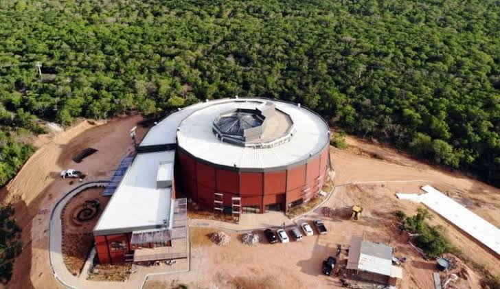
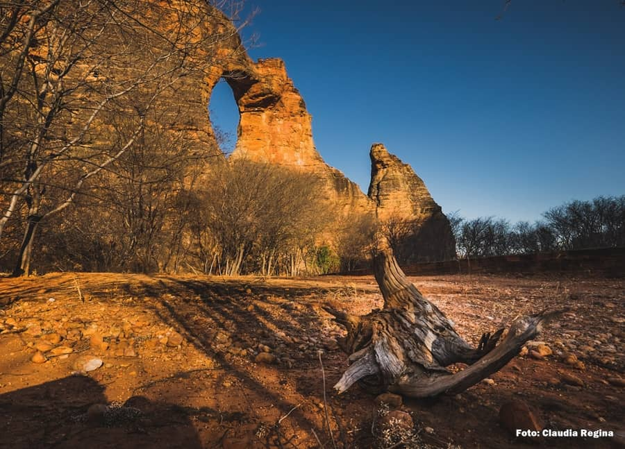
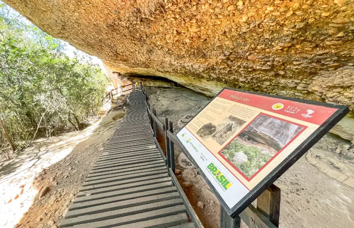

Museu da Natureza
Um museu voltado para a história da vida, das mudanças naturais e das transformações do planeta ao longo do tempo.
Sobre o museu
O Museu da Natureza é um dos principais atrativos culturais da região da Serra da Capivara. O espaço apresenta informações sobre a história natural, a evolução da vida, as mudanças climáticas e as transformações da Terra.
Sua proposta é aproximar o visitante da ciência de forma visual e educativa. Por isso, o museu é uma boa opção para quem gosta de aprender sobre natureza, passado geológico, fauna, flora e os ambientes que formam a região.
Por que visitar?
O Museu da Natureza ajuda a complementar a experiência de quem visita a Serra da Capivara. Ele mostra que a região não é importante apenas pela arqueologia, mas também pela natureza, pelos fósseis, pela paisagem e pela história do planeta.
Galeria do local


